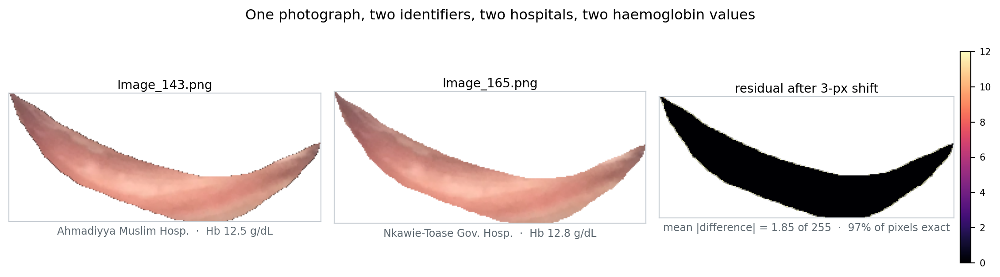
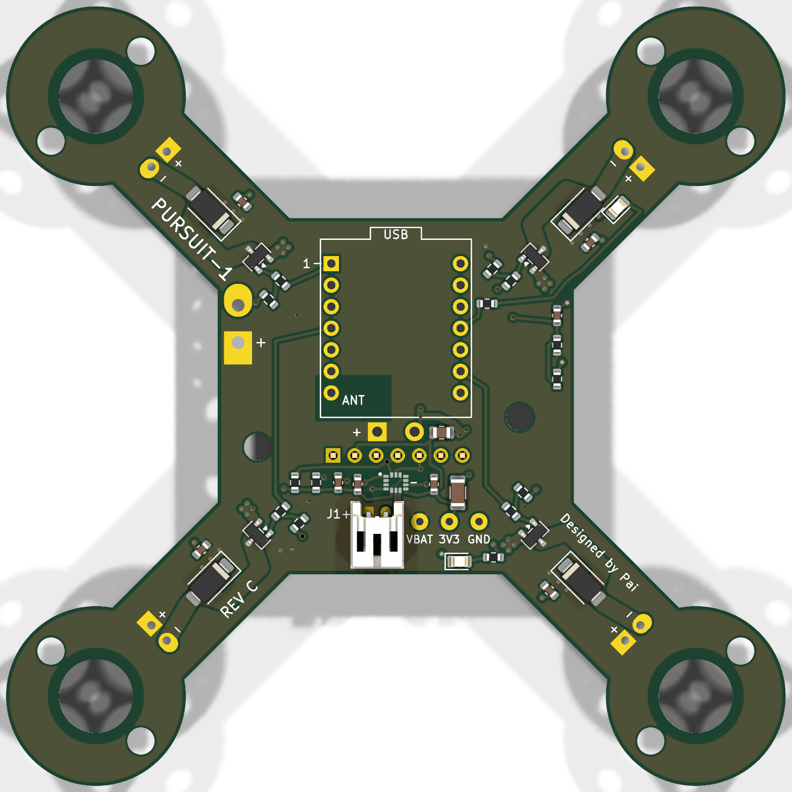
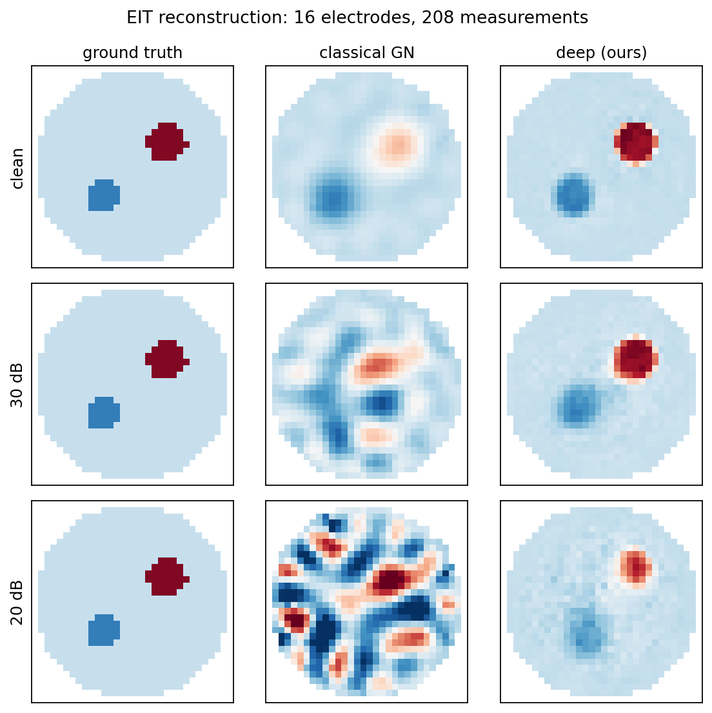
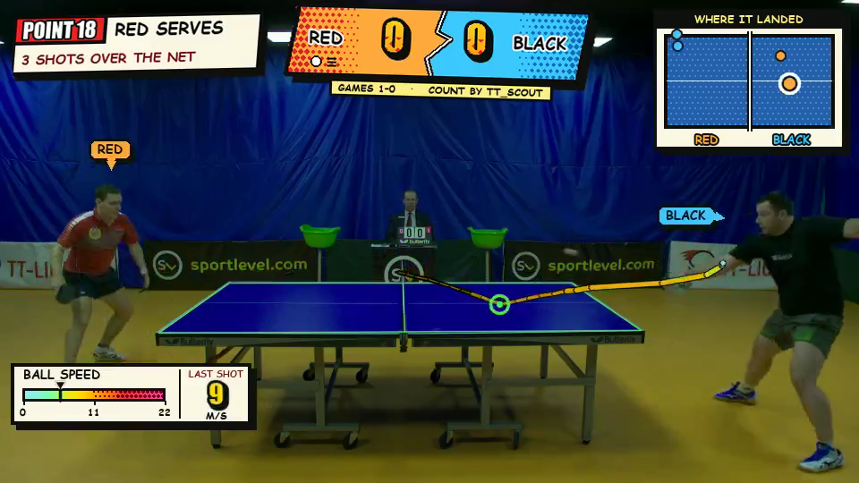
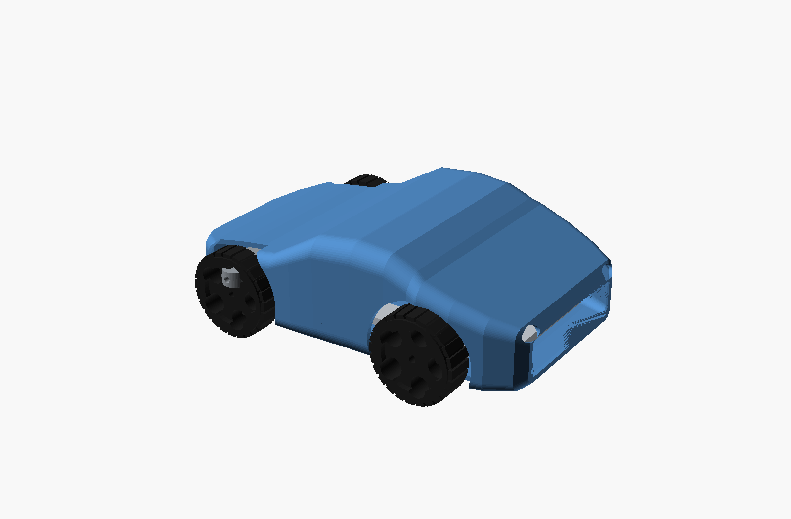
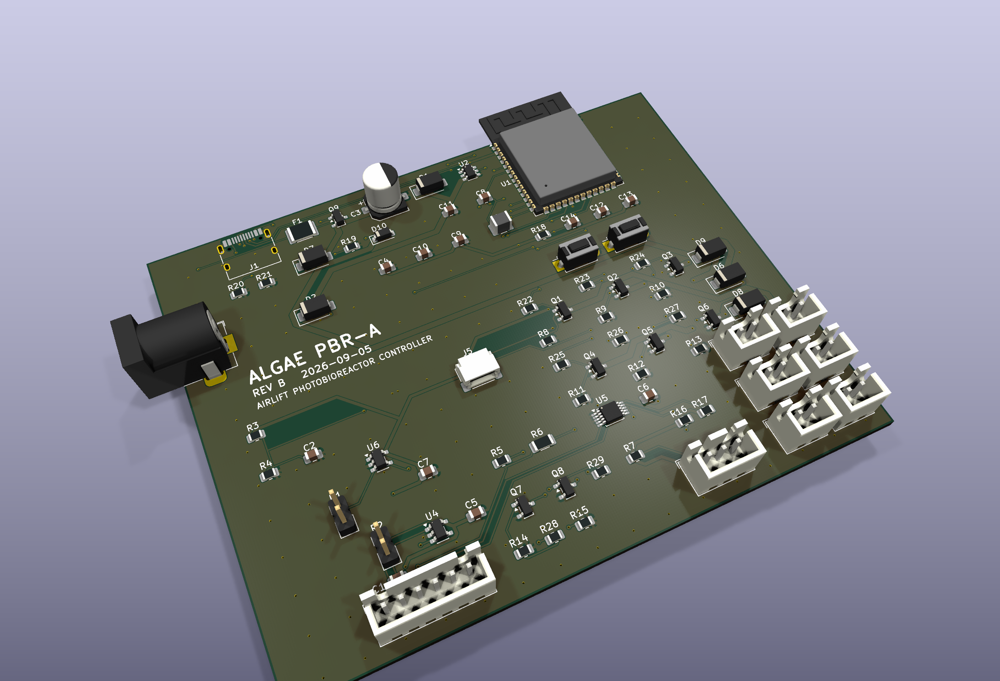

Circuit boards, and the machine learning that runs on them.
Second-year MEng Biomedical Engineering student at UCL. I design hardware, train the models on top of it, and spend most of my time checking whether the numbers are real.
distinct images found in a published clinical benchmark of 710 records
false accepts across impostor faces in the drone's re-identification pipeline
labelled bounces detected on real table-tennis footage, plus 39 of 39 net crossings
the noise regime where learned EIT reconstruction beats the classical method
Selected work
Six projects, each with a number I can defend
Every figure below comes from a script that regenerates it. Where a result is simulation only, or from a single venue, it says so.
PallorHb: anaemia screening from conjunctival images
A study on the public CP-AnemiC dataset that turned into a dataset-integrity audit. The 710 published records are 383 distinct photographs; duplicates crossed collection sites and carried conflicting haemoglobin labels on identical pixels.
- Grouping folds by site, the standard safeguard, still left two-fifths of a +0.176 AUROC inflation in place.
- Corrected baseline AUROC 0.706 (95% CI 0.653 to 0.757); 68 manuscript claims verified automatically.
- Code and the duplicate detector released.
Python · scikit-learn · NumPy · SciPy · bootstrap CIs · DeLong · Bland–Altman · grouped CV

One photograph, two identifiers, two hospitals, two haemoglobin values. Images: CP-AnemiC dataset (Asare, Mendeley Data), CC BY 4.0.

PURSUIT-1: a person-following quadcopter whose airframe is the PCB
The 4-layer flight-controller board is generated from a Python circuit description, so the netlist and layout have one source of truth. All checks pass and fabrication files are released.
- ESP32-S3 flight firmware: sensor fusion, cascaded PID, motor mixing and failsafes, validated on the bench.
- Off-board detection, tracking and face re-identification on ONNX Runtime with CoreML, chosen over PyTorch to keep the deployment at 40 MB.
- 0 false accepts in 24,110 impostor faces; 369 tests.
KiCad · SKiDL · Freerouting · ngspice · C++ · Python · ONNX Runtime · OpenCV · PlatformIO
EIT-16CH: an electrical impedance tomography instrument
A 16-electrode, 4-layer measurement board with 104 components, DRC clean and released for fabrication, alongside a simulation study of how images should be reconstructed from it.
- Learned and classical (Gauss-Newton) reconstruction compared across noise levels, in simulation.
- The learned method wins below 40 dB SNR; above it the classical method holds its own.
KiCad · ESP32-S3 · PlatformIO · PyTorch · NumPy · pyEIT


The generated match report: every point with server, shot count, how it ended and a clip with the tracking drawn on. Pooled over twelve matches: 2.5 cm median landing error, 97% of servers identified. Footage: OpenTTGames (OSAI), CC BY-NC-SA 4.0.
TT-Scout: table tennis match analytics from video
A classical ball detector, tracker and velocity-kink event detector for bounces and net crossings, with no trained model. Player identity by shirt colour, no faces.
- On public footage (OpenTTGames, two clips, one venue): ball on 94 to 96% of labelled frames, 55/59 labelled bounces at 2 to 4 cm median error.
- 39/39 net crossings; 4/4 winners match the umpire's scoreboard.
Python · OpenCV · NumPy · Matplotlib
RL Car: uncertainty-aware autonomous racing
A racer that estimates its own epistemic uncertainty and slows when a sensor is blinded. The useful result was a negative one.
- Uncertainty has to be estimated on a forward model, not the policy: the policy-space ensemble scored AUROC 0.127, anti-correlated, on a blinded sensor.
- A Navier–Stokes solver written from scratch for the body aerodynamics, validated against published cylinder-flow benchmarks.
Python · NumPy · SciPy · bootstrap ridge regression · random Fourier features · FreeCAD · gmsh · CalculiX

150 by 90 by 46 mm, body lofted through seventeen cross-sections; differential drive at the rear, front wheels on a pivoting beam. Rendered from the OpenSCAD model.

Airlift photobioreactor controller
A 2-layer ESP32-S3 controller for a 1 L algae culture, with a growth model fitted to decide the light schedule.
- Optimised schedule predicts +21% biomass at equal energy, in simulation.
- Board is DRC clean with fabrication files built.
KiCad · ngspice · CadQuery · Python · PlatformIO
Publication
One preprint, sole author
Duplicate leakage in a public conjunctival pallor benchmark, and an honest baseline for image-based anaemia screening
Htet, P. H. (2026). Preprint, Zenodo. doi:10.5281/zenodo.22782147
Shows that a published clinical image dataset contains far fewer distinct images than records, that the duplicates carry conflicting labels, and that the usual site-grouped cross-validation does not remove the resulting inflation. Reports a corrected baseline and releases the detector.
About
Where the work comes from
MEng Biomedical Engineering, UCL
2025 to 2029. First-class result in year one. A-Levels: A* Mathematics, Further Mathematics, Physics, Chemistry; A Biology.
Research
Oral cancer detection with deep learning, with Dr J. W. Asare, University of Energy and Natural Resources, Ghana. 2026 to present.
Six months on the wards
Healthcare assistant at Grand Mandalay Hospital, Myanmar, January to June 2025. This is what turned my interest towards machine learning for clinical care.
Skills
Tools I use every week
Languages
Python, C, C++, MATLAB, SQL
Evaluation
Bootstrap confidence intervals, DeLong test, calibration (Hosmer–Lemeshow, ECE, Brier), Bland–Altman agreement, decision curves, grouped cross-validation, leakage control
Machine learning
scikit-learn, PyTorch; epistemic uncertainty via ensembles and random Fourier features, out-of-distribution detection, reinforcement learning, gradient boosting
Vision
CNN, ViT, DETR, YOLO; OpenCV, ONNX Runtime, CoreML; detection, tracking, face recognition
Electronics
2- and 4-layer PCB layout, analog front ends, power; KiCad, SKiDL, LTspice, ngspice; SMD soldering; ESP32-S3, RP2040
Simulation and CAD
MuJoCo, domain randomisation; Fusion 360, SolidWorks, CadQuery, gmsh, CalculiX; 3D printing
Looking for a summer 2027 internship
Medical imaging, biosignals or embedded systems, ideally somewhere the evaluation has to satisfy a regulator as well as a reviewer. Available full-time from mid-June to late September 2027.